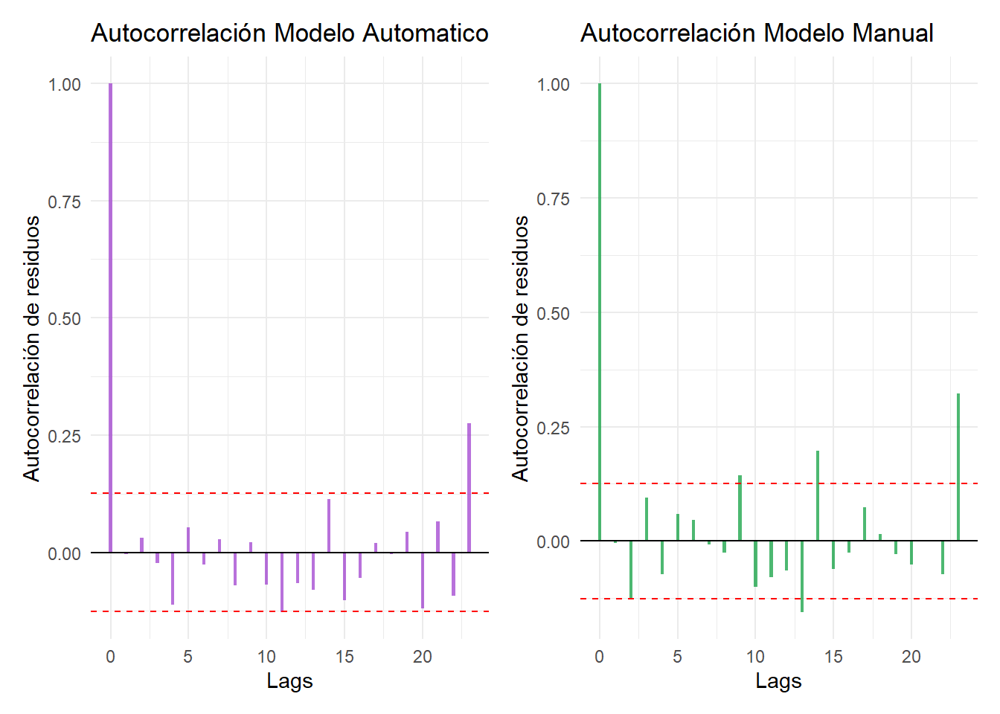
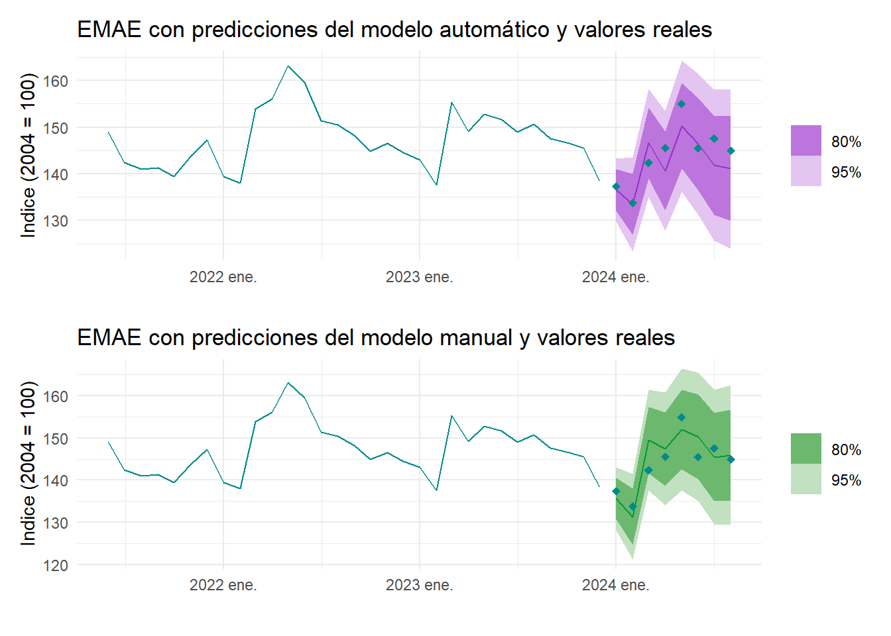

El Estimador Mensual de Actividad Económica (EMAE) refleja la evolución mensual de la actividad económica del conjunto de los sectores productivos a nivel nacional. Este es un indicador provisorio de la evolución del PIB a precios constantes de 2004 que será difundido con un rezago de 50 a 60 días de concluido el mes de referencia.
El indicador es un índice Laspeyres que ofrece una pauta del comportamiento de la actividad económica real con una frecuencia mayor a la del PIB trimestral a precios constantes. Su cálculo se estructura en la agregación del valor agregado a precios básicos de cada una de las actividades económicas más los impuestos netos de subsidios a los productos, utilizando las ponderaciones de las cuentas nacionales base 2004 de la República Argentina. Se trata de replicar los métodos de cálculo del PIB trimestral y/o anual, en la medida en que lo permite la disponibilidad de fuentes de información para un período más corto.
Es necesario enfatizar que el EMAE se elabora con información parcial, de carácter provisorio -dado que en algunos casos es corregida y/o completada por la fuente- o con indicadores alternativos a los que se utilizan para el cálculo trimestral, en tanto se han evaluado como adecuadas aproximaciones a éstos. Dado que la estimación del PIB trimestral reúne mayor cantidad de datos, por cerrarse y difundirse unos 30 días después que el EMAE, es habitual que se observen diferencias entre las variaciones trimestrales de ambos indicadores.
El objetivo de este informe es aplicar de manera práctica las herramientas analíticas adquiridas en la cátedra de Series de Tiempo, mediante un análisis descriptivo y predictivo de series temporales reales. Se busca así fortalecer la comprensión de los métodos estudiados y su aplicación en datos económicos, evaluando tanto las tendencias históricas como las posibles proyecciones del comportamiento económico en el corto y mediano plazo.
La API de Series de Tiempo de Argentina permite consultar indicadores con evolución cronológica publicados en formatos abiertos por organismos de la Administración Pública Nacional. Haremos uso de dicha API para traer la serie EMAE. Base 2004
source("enviroment.R")
# API EMAE datos.gob
emae_mensual <- read.csv("https://infra.datos.gob.ar/catalog/sspm/dataset/143/distribution/143.3/download/emae-valores-anuales-indice-base-2004-mensual.csv")
# Extrae el año
emae_mensual$indice_tiempo <- as.Date(emae_mensual$indice_tiempo, format = "%Y-%m-%d")
emae_mensual$year <- year(emae_mensual$indice_tiempo)
emae_mensual$periodo <- format(emae_mensual$indice_tiempo, "%Y-%m")
# Filtrar por si publican nuevos valores
emae_mensual <- emae_mensual %>%
filter(periodo <= "2024-08") %>%
select(-c(emae_tendencia_ciclo,
emae_original_via,
emae_desestacionalizada_vm,
emae_tendencia_ciclo_vm))
kable(tail(emae_mensual),
format = "html",
table.attr = "class='table table-striped'") %>%
kable_styling() %>%
row_spec(0, bold = T, background = "cyan4", color = "white")| indice_tiempo | emae_original | emae_desestacionalizada | year | periodo | |
|---|---|---|---|---|---|
| 243 | 2024-03-01 | 142.3900 | 140.7345 | 2024 | 2024-03 |
| 244 | 2024-04-01 | 145.5461 | 139.2429 | 2024 | 2024-04 |
| 245 | 2024-05-01 | 154.9449 | 140.1355 | 2024 | 2024-05 |
| 246 | 2024-06-01 | 145.4613 | 139.4089 | 2024 | 2024-06 |
| 247 | 2024-07-01 | 147.5739 | 142.3072 | 2024 | 2024-07 |
| 248 | 2024-08-01 | 144.9507 | 142.5625 | 2024 | 2024-08 |
Vemos que actualmente tenemos valores publicados hasta el mes de agosto de 2024. Decidimos guardar todos los meses de dicho año para luego comparar con nuestras predicciones.
values_to_predict <- tail(emae_mensual$emae_original, 8)
# Eliminar los últimos 8 registros de emae_mensual
emae_mensual <- emae_mensual[1:(nrow(emae_mensual) - 8), ]
emae_mensual$year_factor <- as.factor(emae_mensual$year)
# Creo un Time Serie object
emae_mensual_ts <- emae_mensual %>%
mutate(periodo = yearmonth(periodo)) %>%
as_tsibble(index = periodo)AVISO: puede cliquear los gráficos para ampliarlos
En primera instancia, queremos usar nuestros conocimientos para identificar un modelo que ajuste correctamente a nuestros datos de forma “manual”. Es por esto que comenzamos observando la evolución del EMAE en el tiempo (con base 100 al inicio de 2004).
s1 <- ggplot(emae_mensual_ts, aes(x = indice_tiempo, y = emae_original)) +
geom_line(color = "cyan4") +
labs(title = "Serie de Tiempo EMAE", x = "Fecha", y = "Indice 2004 = 100") +
theme_minimal()
ggplotly(s1)También se grafica un boxplot por año, para ver si la varianza es constante.
ggplot(emae_mensual_ts, aes(x = year_factor, y = emae_original)) +
geom_boxplot(fill = "cyan4") +
labs(title = "Boxplot de Valores Anuales",
x = "Year",
y = "Indice 2004 = 100") +
theme_minimal()Si tenemos en cuenta los outliers, la varianza luce parecida a lo largo de los años, pero esto es solo una aproximación gráfica. Como no tenemos certeza, realizamos el gráfico de Box y Cox para probar posibles transformaciones.
Sabemos que una de las formas de estabilizar la varianza en nuestra serie es realizando alguna transformación como lo son la logarítmica o cuadrática. Se probaron algunas transformaciones en la serie, pero ninguna parecía tener una implicancia positiva en la estabilización de la varianza. Por ello, se decidió presentar la transformación recomendada por el gráfico de Box y Cox solo a modo de ejemplo.
lambda <- 3
# Aplicar la transformación
emae_mensual_ts <- emae_mensual_ts %>%
mutate(emae_transformed = (emae_original^lambda - 1) / lambda)
ggplot(emae_mensual_ts, aes(x = year_factor, y = emae_transformed)) +
geom_boxplot(fill="cyan4") +
labs(title = "Boxplot de Valores anuale", x = "Year", y = 'Indice 2004 = 100') +
theme_minimal() # no tiene variancia constanteComo mencionamos anteriormente, esta transformación solo parece cambiar la escala, pero no la forma de la varianza anual, por lo que continuaremos nuestro trabajo con la serie original.
Al analizar la serie temporal del EMAE, observamos un patrón de estacionalidad recurrente, donde las fluctuaciones anuales se mantienen consistentemente a lo largo del tiempo. Para abordar este comportamiento y trabajar con una serie estacionaria (requisito fundamental para los modelos ARIMA), decidimos aplicar una diferenciación estacional. Este proceso nos permite eliminar los componentes estacionales y centrar nuestro análisis en las variaciones más relevantes de la tendencia y los ciclos.
Al analizar los gráficos de la Función de Autocorrelación (FAC) y la Función de Autocorrelación Parcial (FACP), identificamos características que sugieren un modelo autorregresivo (AR) en la parte regular de la serie. En particular:
La FAC muestra una caída exponencial y un patrón sinusoidal, característico de un modelo AR.
La FACP resalta significancia en los rezagos 2 y 3, lo que podría apuntar a un modelo \(AR(3)\). Sin embargo, optamos por el modelo más sencillo, \(AR(1)\), para mantener la parsimonia.
Para la parte estacional, observamos picos significativos en los rezagos 12 y 24, lo que indica una estacionalidad anual bien definida, es por esto que recurrimos a una diferenciación. Luego de aplicar la diferenciación estacional, consideramos los siguientes modelos como candidatos:
\(SARIMA(1,0,0)(1,1,0)_{(12)}\): Un modelo simple que captura la dinámica principal.
\(SARIMA(1,0,0)(2,1,0)_{(12)}\): Una extensión que podría reflejar interacciones adicionales entre rezagos.
Finalmente, la selección del modelo se basará en criterios de ajuste como AIC, BIC y análisis de residuos para garantizar un balance entre la bondad de ajuste y la parsimonia del modelo.
A partir del análisis previo de los gráficos de la FAC y la FACP, identificamos posibles configuraciones para los modelos ARIMA que se ajustan tanto a la parte regular como a la estacional de la serie. Con base en estos hallazgos, y para garantizar un análisis robusto, procederemos a ajustar los modelos identificados de dos maneras:
Modelos identificados manualmente: Utilizaremos las configuraciones sugeridas (por ejemplo, \(SARIMA(1,0,0)(1,1,0)_{(12)}\) y \(SARIMA(1,0,0)(2,1,0)_{(12)}\)) como punto de partida para verificar su desempeño en el ajuste de la serie.
Modelos automáticos: Exploraremos opciones generadas automáticamente mediante métodos de selección óptimos basados en criterios como AIC y BIC, que evalúan el balance entre la complejidad del modelo y su capacidad de predicción.
De esta manera, compararemos los resultados de ambos enfoques para determinar cuál ofrece el mejor ajuste y predicción, siempre considerando la parsimonia y la calidad de los residuos.
# Definir nombres de archivo para guardar los modelos
fit_original_file <- "fitted/fit_original.rds"
fit_transformed_file <- "fitted/fit_transformed.rds"
# Ajuste y guardado de fit_original
NOTFIT = TRUE
if (NOTFIT) {
fit_original <- readRDS(fit_original_file)
message("Modelo fit_original cargado desde \fitted.")
} else {
fit_original <- emae_mensual_ts %>%
model(
arima11 = ARIMA(emae_original ~ pdq(1,0,0) + PDQ(1,1,0)),
arima11_2 = ARIMA(emae_original ~ pdq(1,0,0) + PDQ(2,1,0)),
auto = ARIMA(emae_original, stepwise = FALSE, approx = FALSE),
auto_2 = ARIMA(emae_original, stepwise = TRUE, approx = TRUE)
)
saveRDS(fit_original, fit_original_file)
message("Modelo fit_original ajustado y guardado en \fitted.")
}
df_fit <- as.data.frame(fit_original %>%
pivot_longer(everything(),
names_to = "Model name",
values_to ="Orders"))
kable(df_fit,
format = "html",
table.attr = "class='table table-striped'") %>%
kable_styling() %>%
row_spec(0, bold = T, background = "cyan4", color = "white")| Model name | Orders |
|---|---|
| arima11 | <ARIMA(1,0,0)(1,1,0)[12]> |
| arima11_2 | <ARIMA(1,0,0)(2,1,0)[12]> |
| auto | <ARIMA(0,1,2)(2,1,2)[12]> |
| auto_2 | <ARIMA(2,1,2)(0,1,1)[12]> |
glance_summary <- glance(fit_original) %>%
select(.model, sigma2, log_lik, AIC, AICc, BIC)
kable(as.data.frame(glance_summary),
format = "html",
table.attr = "class='table table-striped'") %>%
kable_styling() %>%
row_spec(0, bold = T, background = "cyan4", color = "white")| .model | sigma2 | log_lik | AIC | AICc | BIC |
|---|---|---|---|---|---|
| arima11 | 15.94339 | -639.8501 | 1285.700 | 1285.807 | 1295.988 |
| arima11_2 | 14.51855 | -629.7972 | 1267.594 | 1267.774 | 1281.312 |
| auto | 11.96773 | -608.5686 | 1231.137 | 1231.649 | 1255.112 |
| auto_2 | 12.20772 | -610.6591 | 1233.318 | 1233.700 | 1253.868 |
De la tabla presentada, obtenemos las siguientes observaciones clave:
El mejor modelo identificado es el ajustado automáticamente, \(SARIMA(0,1,2)(2,1,2)_{12}\). Este modelo utiliza una diferenciación y un comportamiento \(MA(2)\) en la parte regular y una diferenciación y un comportamiento \(ARMA(2,2)\) en la parte estacional.
El modelo \(SARIMA(1,0,0)(2,1,0)_{(12)}\) presenta un desempeño competitivo y será considerado como una alternativa más sencilla para comparación.
A partir de estas conclusiones, trabajaremos con ambos modelos (\(SARIMA(0,1,2)(2,1,2)_{12}\). y \(SARIMA(1,0,0)(2,1,0)_{(12)}\)) en las siguientes etapas del análisis, evaluando su desempeño en términos de ajuste y predicción.
Presentamos los coeficientes \(\theta\), \(\Theta\), \(\phi\) y \(\Phi\) estimados
params_df <- as.data.frame(fit_original %>%
tidy() %>%
select(.model, term, estimate)%>%
filter(.model %in% c("auto", "arima11_2"))
)
kable(as.data.frame(params_df),
format = "html",
table.attr = "class='table table-striped'") %>%
kable_styling() %>%
row_spec(0, bold = T, background = "cyan4", color = "white")| .model | term | estimate |
|---|---|---|
| arima11_2 | ar1 | 0.9242808 |
| arima11_2 | sar1 | -0.4988363 |
| arima11_2 | sar2 | -0.2932145 |
| auto | ma1 | 0.0975449 |
| auto | ma2 | -0.2622736 |
| auto | sar1 | 0.7855182 |
| auto | sar2 | -0.4157480 |
| auto | sma1 | -1.4610781 |
| auto | sma2 | 0.6935498 |
Los modelos estimados con los que trabajaremos se notan como:
\[(1-0,92B)(1+0,5B^{12}+0,29B^{24})(1-B^{12})Z_t=a_t \]
\[(1-0,79B^{12}+0,42B^{24})(1-B)(1-B^{12})Z_t=(1-0,97B+0,96B^2)(1+1,46B^{12}-0,69B^{24})a_t\] Para cerrar esta sección, presentamos un gráfico interactivo que permite analizar la similitud y precisión de ambos modelos ajustados. Con el objetivo de facilitar la interpretación visual, se se incluyen únicamente los datos correspondientes a los últimos cuatro años para destacar patrones recientes y poder comparar claramente.
fitted_values <- fit_original %>%
augment() %>% # Obtener valores ajustados
as_tibble() %>% # Convertir a tibble para ggplot
mutate(Modelo = .model)
fitted_values <- fitted_values %>%
mutate(periodo_date = parse_date_time(periodo, orders = "Y b")) # Convierte fecha
fitted_values_filtered <- fitted_values %>%
filter(
periodo_date >= ymd("2019-01-01") & periodo_date <= ymd("2024-12-31"),
.model %in% c("auto", "arima11_2") # Filtrar modelos
)
# Graficar los valores filtrados
g <- ggplot(data = fitted_values_filtered, aes(x = periodo_date)) +
geom_line(aes(y = emae_original, color = "Serie Original"), size = 1) +
geom_line(aes(y = .fitted, color = .model), linetype = "dashed", size = 0.8) +
labs(
title = "Serie Original y Estimaciones de los Modelos (2019-2024)",
x = "Tiempo",
y = "Índice 2004 = 100",
color = "Leyenda"
) +
theme_minimal() +
scale_color_manual(values = c("Serie Original" = "cyan4", "arima11_2" = "#009933", "auto" = "#9933CC"))
ggplotly(g)Antes de proceder con las predicciones, es fundamental verificar que los residuos del modelo, definidos como \(\hat{a_t}=Z_t - \hat{Z_{t}}\) cumplan con los supuestos planteados a la hora de hacer el ajuste:
\(E(a_t)=0\). Los residuos deben tener media cero.
\(V(a_t)=\sigma_a^2\). La varianza de los residuos debe ser constante a lo largo del tiempo.
Independencia. Los residuos deben ser incorrelados.
\(a_t \sim N(0,\sigma_a^2)\).Los residuos deben seguir una distribución asintóticamente Normal.
Comenzaremos con un gráfico de Residuos vs Timepo para comprobar esperanza y variancia constante
# Extraer los residuos del modelo "auto"
residuos1 <- residuals(fit_original, type = "response") %>%
filter(.model == "auto") # modelo "auto"
residuos2 <- residuals(fit_original, type = "response") %>%
filter(.model == "arima11_2") #arima11_2
# Graficar los residuos vs tiempo
g1 <- ggplot(residuos1, aes(x = periodo, y = .resid)) +
geom_point(color = "#9933CC") +
geom_hline(yintercept = 0, linetype = "dashed", color = "red") +
labs(
title = "Residuos Modelo Automatico",
x = "",
y = "Residuos"
) +
theme_minimal()
g2 <- ggplot(residuos2, aes(x = periodo, y = .resid)) +
geom_point(color = "#009933") +
geom_hline(yintercept = 0, linetype = "dashed", color = "red") +
labs(
title = "Residuos Modelo Manual",
x = "",
y = "Residuos"
) +
theme_minimal()
g1+g2Se observan valores atípicos evidentes en marzo y abril de 2020, correspondientes al inicio de la pandemia de COVID-19. Excluyendo estos puntos, los residuos del modelo automático parecen mostrar una varianza constante. En el caso del modelo identificado “manualmente,” se aprecia un ligero incremento en la varianza que, sin embargo, podríamos despreciar. Esta estabilidad en los residuos nos habla de dosbuenos ajustes.
Continuamos nuestro análisis con uno el más importante de los supuestos, la incorrelación de los residuos. Para evaluarlo, observamos los gráficos de autocorrelación (FAC) de los residuos de ambos modelos.
# Gráfico de autocorrelación para los residuos
# acf(residuos1$.resid, main = "Autocorrelación de los residuos", lag.max = 48)
# acf(residuos2$.resid, main = "Autocorrelación de los residuos", lag.max = 48)
acf1_data <- acf(residuos1$.resid, plot = FALSE)
acf2_data <- acf(residuos2$.resid, plot = FALSE)
acf_df <- data.frame(
Lag1 = acf1_data$lag,
ACF1 = acf1_data$acf,
Lag2 = acf2_data$lag,
ACF2 = acf2_data$acf
)
# Graficar autocorrelación con ggplot
r1 <- ggplot(acf_df, aes(x = Lag1, y = ACF1)) +
geom_bar(stat = "identity", fill = "#9933CC", alpha = 0.7, width = 0.2) +
geom_hline(yintercept = 0, color = "black") +
geom_hline(yintercept = c(-1.96 / sqrt(length(residuos1$.resid)),
1.96 / sqrt(length(residuos1$.resid))),
linetype = "dashed", color = "red") +
labs(title = "Autocorrelación Modelo Automatico",
x = "Lags",
y = "Autocorrelación de residuos") +
theme_minimal()
r2 <- ggplot(acf_df, aes(x = Lag2, y = ACF2)) +
geom_bar(stat = "identity", fill = "#009933", alpha = 0.7, width = 0.2) +
geom_hline(yintercept = 0, color = "black") +
geom_hline(yintercept = c(-1.96 / sqrt(length(residuos2$.resid)),
1.96 / sqrt(length(residuos2$.resid))),
linetype = "dashed", color = "red") +
labs(title = "Autocorrelación Modelo Manual",
x = "Lags",
y = "Autocorrelación de residuos") +
theme_minimal()
r1+r2
En el caso del modelo automático, la FAC muestra un comportamiento consistente con un ruido blanco, con la excepción de un bastón significativo en un rezago mayor al 20. Esto sugiere que, en general, los residuos están incorrelados.
Por otro lado, la FAC de los residuos del modelo identificado manualmente revela varios rezagos significativos antes del lag 15, lo que indica que estos residuos no se comportan completamente como un ruido blanco. Este hallazgo podría reflejar deficiencias en el ajuste de este modelo, especialmente al momento de realizar predicciones.
Finalmente, observamos un histograma y un Q-Q plot de los residuos para evaluar su proximidad a una distribución normal.
# Histograma de los residuos
h1 <- ggplot(residuos1, aes(x = .resid)) +
geom_histogram(aes(y = ..density..), bins = 30, fill = "#9933CC", alpha = 0.7) +
geom_density(color = "red", size = 1) +
labs(
title = "Histograma de modelo automatico",
x = "Residuos",
y = "Densidad"
) +
theme_minimal()
# QQ-Plot normal
qq1 <- ggplot(residuos1, aes(sample = .resid)) +
stat_qq(color = "#9933CC") +
stat_qq_line(color = "red", linetype = "dashed") +
labs(
title = "QQ-Plot de los residuos",
x = "Cuantiles teoricos",
y = "Cuantiles de los residuos"
) +
theme_minimal()
h2 <- ggplot(residuos2, aes(x = .resid)) +
geom_histogram(aes(y = ..density..), bins = 30, fill = "#009933", alpha = 0.7) +
geom_density(color = "red", size = 1) +
labs(
title = "Histograma de modelo manual",
x = "Residuos",
y = "Densidad"
) +
theme_minimal()
# QQ-Plot normal
qq2 <- ggplot(residuos2, aes(sample = .resid)) +
stat_qq(color = "#009933") +
stat_qq_line(color = "red", linetype = "dashed") +
labs(
title = "QQ-Plot de los residuos",
x = "Cuantiles teoricos",
y = "Cuantiles de los residuos"
) +
theme_minimal()
(h1+h2) / (qq1+qq2)Si bien identificamos la presencia de outliers (Marzo y Abril de 2020), los cuales desvían la distribución de los residuos de la normalidad, esto no es motivo de preocupación ya que el supuesto de normalidad no es estrictamente necesario para la calidad del modelo. Utilizamos este supuesto para construir intervalos de confianza en nuestras prediccione.
Una vez seleccionado el modelo más adecuado y comprobados los supuestos estadísticos, avanzamos a la parte más enriquecedora de nuestro análisis: la predicción.
En esta sección, presentamos las predicciones generadas para los meses de enero a agosto de 2024. Compararemos estas proyecciones con los valores reales observados en dicho período, permitiéndonos evaluar el desempeño y la eficiencia de nuestro modelo ajustado.
Este análisis no solo nos proporcionará una medida de la precisión del modelo, sino que también permitirá identificar posibles ajustes o mejoras que podrían ser necesarios en futuros escenarios.
# Filtramos los datos recientes
emae_mensual_ts_recent <- emae_mensual_ts %>%
filter(periodo >= as.Date("2021-06-01"))
# Forecast
f1 <- forecast(fit_original, h = 8) %>%
filter(.model == 'auto')
f2 <- forecast(fit_original, h = 8) %>%
filter(.model == 'arima11_2')
values_to_predict_df <- data.frame(
periodo = seq(from = as.Date("2024-01-01"), by = "month", length.out = length(values_to_predict)),
values = values_to_predict
)
# Gráfico
g1 <- autoplot(emae_mensual_ts_recent) +
autolayer(f1, series = "Prediccion", color = "#9933CC") +
autolayer(emae_mensual_ts_recent, series = "Serie Original", color = "cyan4") +
geom_point(data = values_to_predict_df, aes(x = periodo, y = values), color = "cyan4", size = 2, shape = 18) + # Valores reales
labs(
title = "EMAE con predicciones del modelo automático y valores reales",
y = "Indice (2004 = 100)",
x = ""
) +
theme_minimal() +
theme(legend.title = element_blank())
g2 <- autoplot(emae_mensual_ts_recent) +
autolayer(f2, series = "Prediccion", color = "#009933") +
autolayer(emae_mensual_ts_recent, series = "Serie Original", color = "cyan4") +
geom_point(data = values_to_predict_df, aes(x = periodo, y = values), color = "cyan4", size = 2, shape = 18) + # Valores reales
labs(
title = "EMAE con predicciones del modelo manual y valores reales",
y = "Indice (2004 = 100)",
x = ""
) +
theme_minimal() +
theme(legend.title = element_blank())
g1/g2
gp <- autoplot(emae_mensual_ts_recent) +
autolayer(f1, series = "auto", color = "#9933CC") +
autolayer(f2, series = "arima11_2", color = "#009933") +
autolayer(emae_mensual_ts_recent, series = "Serie Original", color = "cyan4") +
geom_point(data = values_to_predict_df, aes(x = periodo, y = values), color = "cyan4", size = 2, shape = 18) + # Valores reales
labs(
title = "EMAE con predicciones del modelo manual y valores reales",
y = "Indice (2004 = 100)",
x = "",
color = "Leyenda"
) +
theme_minimal() +
scale_color_manual(values = c("Serie Original" = "cyan4", "arima11_2" = "#009933", "auto" = "#9933CC"))
ggplotly(gp)Para evaluar y comparar las predicciones de nuestros modelos utilizaremos el MAPE (Mean Absolute Percentage Error). Este representa el promedio del error absoluto en términos porcentuales respecto a los valores reales, indica, en promedio, cuánto se desvió porcentualmente el modelo de los valores reales.
La fórmula del MAPE es:
\[ MAPE = \frac{1}{M} \sum_{l=1}^M \left| \frac{e_l}{Z_{n+l}} \right| \times 100 \] Donde:
Un MAPE bajo indica un buen rendimiento, pero esta métrica puede ser sensible a valores reales cercanos a cero, lo que puede inflar el porcentaje de error, por esto la acompañaremos con el MSE (Mean Square Error).
Utilizamos las funciones MAPE y MSE de la libreria MLmetrics
mape_auto <- round(MAPE(y_pred = values_to_predict, y_true = f1$.mean)*100,2)
mse_auto <- MSE(y_pred = values_to_predict, y_true = f1$.mean)
mape_manual <- round(MAPE(y_pred = values_to_predict, y_true = f2$.mean)*100,2)
mse_manual <- MSE(y_pred = values_to_predict, y_true = f2$.mean)
metricas <- data.frame(
Modelo = c("Automático", "Manual"),
MAPE = c(mape_auto, mape_manual),
MSE = c(mse_auto, mse_manual)
)
# Mostrar como tabla con kable
kable(metricas,
col.names = c("Modelo", "MAPE", "MSE"),
caption = "Metricas para comparar modelos",
format = "html",
table.attr = "class='table table-striped'") %>%
kable_styling() %>%
row_spec(0, bold = T) %>%
row_spec(1, bold = T, background = "#9933CC", color = "white") %>%
row_spec(2, bold = T, background = "#009933", color = "white")| Modelo | MAPE | MSE |
|---|---|---|
| Automático | 2.21 | 14.11543 |
| Manual | 2.05 | 12.53922 |
Obervando estas metricas podemos decir que ambos modelos muestran un excelente ajuste a los datos originales. En promedio, los modelos se equivocan en apenas por encima del 2% al realizar predicciones, lo cual nos habla de una gran precisión predictiva. Podemos decir que cualquiermodelo es confiables para la predicción, siendo el modelo identificado “a ojo” más preciso y más parsimonioso.
Es importante destacar que, si bien estamos prediciendo valores desconocidos para la serie, estos no son desconocidos para nosotros. Podríamos haber entrenado el modelo utilizando datos hasta agosto de 2024 y realizar predicciones para los valores futuros del EMAE.
Tambien tenemos que notar las medidas de error excepcionalmente pequeñas, esto pueden ser un indicio de sobreajuste, es decir, que el modelo se ajusta demasiado a las particularidades del conjunto de datos de entrenamiento y pierde capacidad de generalización. Para no correr este riesgo, podriamos recurrir a diversas técnica como la division de nuestros datos en entrenamiento y testeo o la validación cruzada.
Como vimos en la sección anterior, el modelo con mejor desempeño en términos de predicción fue el \(SARIMA(1,0,0)(2,1,0)_{12}\) estimado manualmente. Sin embargo, si nos remitimos a la comprobación de supuestos presentada en la sección Diagnóstico del modelo, podemos recordar que este modelo no cumple completamente con el supuesto de errores incorrelados. Por ello, resulta razonable inclinarse por el modelo \(SARIMA(0,1,2)(2,1,2)_{12}\) ajustado automáticamente, el cual, aunque tenga un rendimiento predictivo ligeramente inferior, respeta los supuestos fundamentales del análisis.
En un contexto donde la ciencia de datos y las técnicas modernas como el machine learning están en auge, es común que ciertos detalles estadísticos, como la verificación de supuestos, sean pasados por alto. Sin embargo, es crucial recordar que estas técnicas están profundamente enraizadas en la estadística, y que una interpretación sólida requiere no solo optimizar la predicción, sino también mantener un análisis crítico y respetar las bases que sustentan nuestros modelos. Este enfoque no solo asegura resultados más confiables, sino que también contribuye a la robustez y replicabilidad de nuestras conclusiones.
Tanto en la cátedra como en este trabajo nos basamos el los libros:
Forecasting: Principles and Practice (3rd ed) de Rob J Hyndman and George Athanasopoulos
Time Series Analysis: Univariate and Multivariate Methods (2nd er) de Wiliam Wei